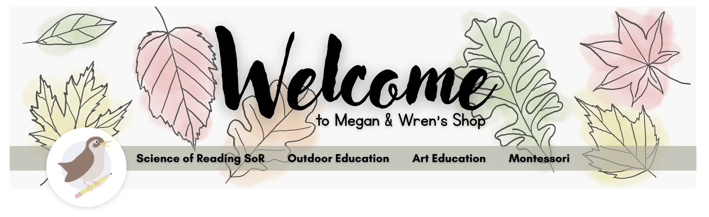

Educational Resource Design
Combining my background in visual communication and design with my mother’s experience as an educator, I create classroom resources designed to be both functional and visually engaging.
Growing up as the child of a teacher, I spent countless hours helping out in my mom’s classroom and seeing firsthand the creativity, organization, and work that goes into teaching. What began as a way to create useful materials for my mother, Megan, eventually grew into our Teachers Pay Teachers shop.
Through this project, I bring together design, education, and problem-solving to create resources for teachers like my mom, with an emphasis on Science of Reading aligned content and outdoor education.
Contact Me
I’d love to connect about research, design, sustainability, and collaboration opportunities.